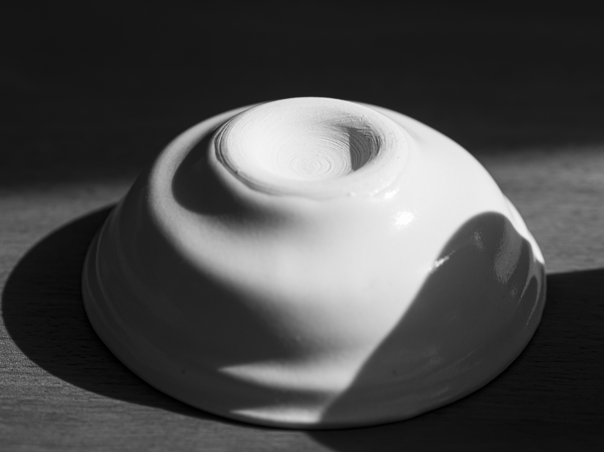
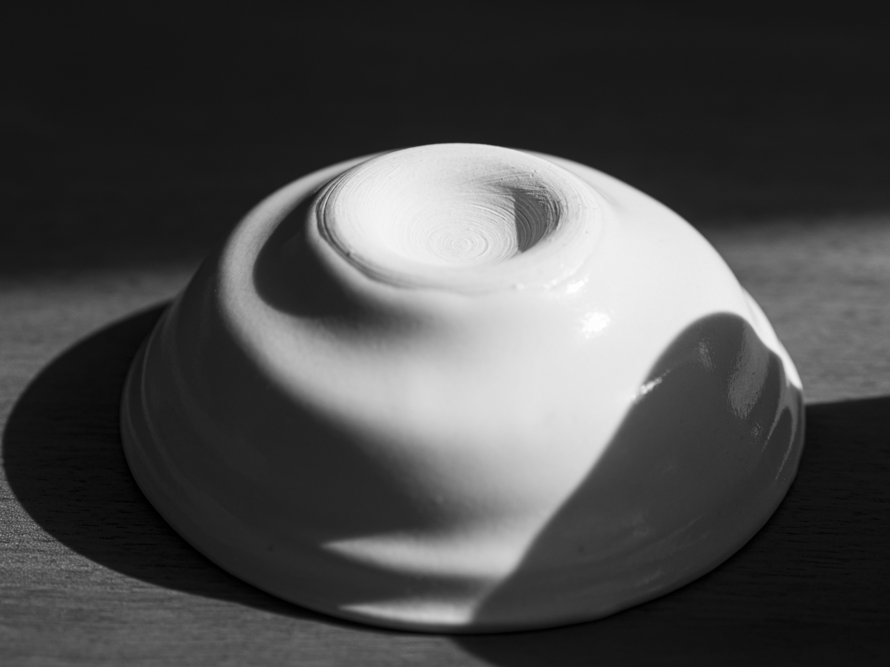

Tea Set
Industrial Ceramics
Tea Set is a material exploration in ceramic and mass-produced slip casting. The set features 6oz teacups and small bowls designed to be comfortable in the hand. Both dishes feature indents at their base, making the bowl easy to grip using an underhand technique and allowing for heat insulation through the bottom of the teacup so as not to burn the user when enjoying tea. The detail near the lip of the dishes provides additional grip and acts as a fill line to ensure a consistent 6oz of tea.
 
